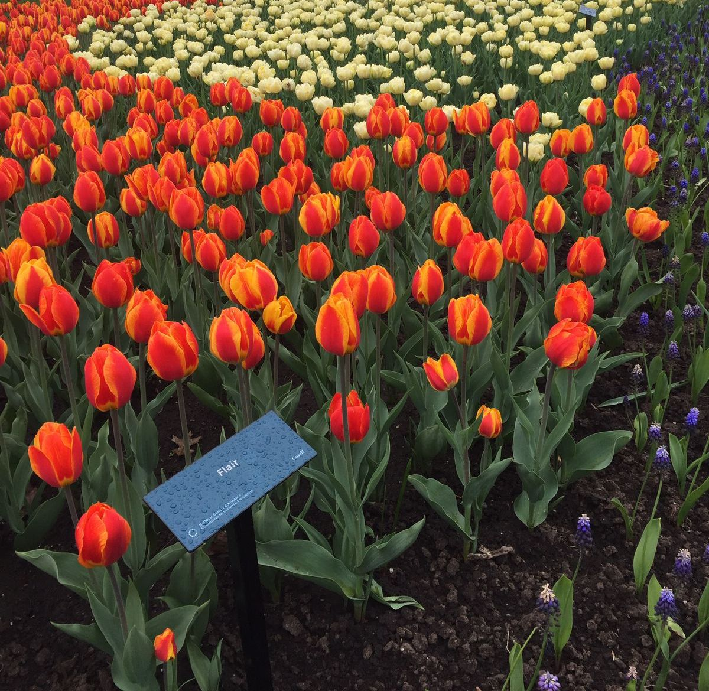
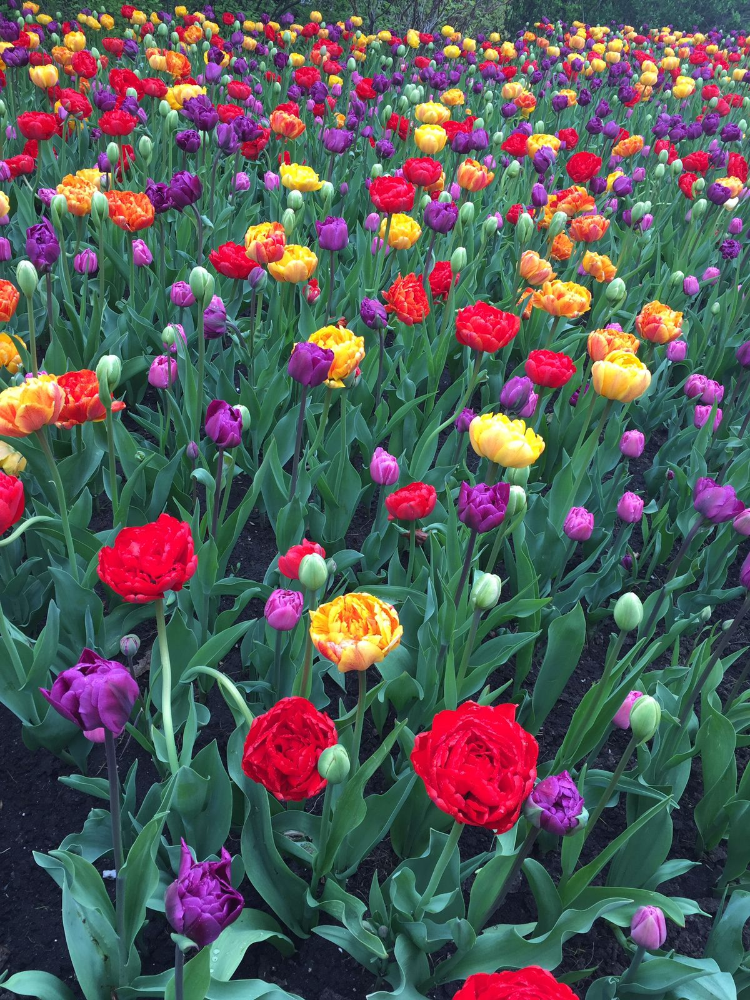

Montreal, Quebec, Canada
Inicio
Viejo Montreal
Jardin Botanico
Gastronomia
Mt Royal
Museo de arte
St Paul St
Jardin Botanico
 
El Jardin Botanico de Montreal es un gran jardin botanico en Montreal, Quebec. Esta ubicada en Sherbrooke St. y es como un paraiso verde en medio de toda la ciudad y sus edificios.